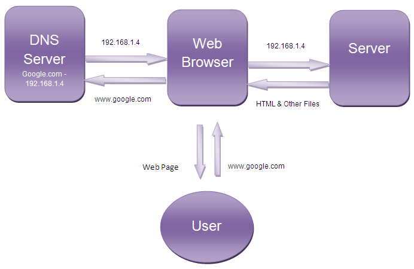
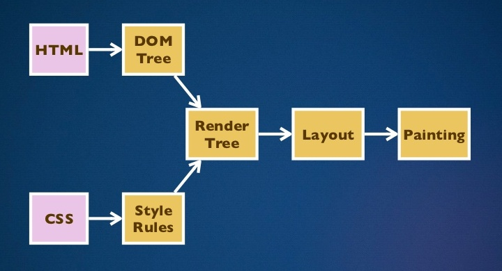
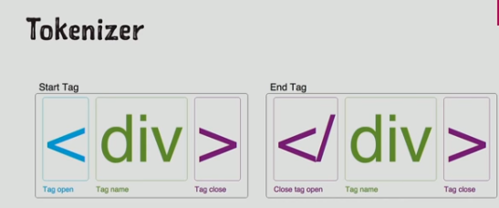
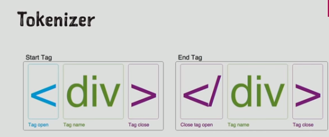
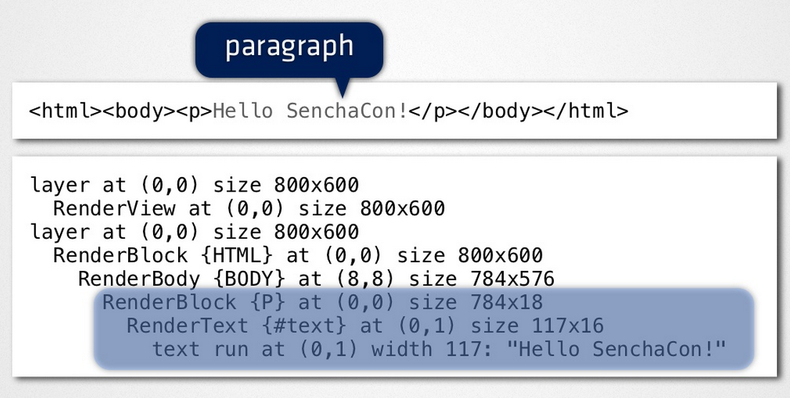

How browser works

Created by Nastassia Tanyhina
The browser's main components

Client-server model
- Contact to DNS Server A DNS server stores the IP addresses of the server associated with the corresponding domain names. The DNS server takes the domain name from the browser and returns the corresponding IP address to the browser.
- Contact to Server After getting the IP address of the server for the requested webpage, browser sends a request to that server for the desired files. The methods of communication between web client and server are defined by HTTP (Hyper Text Transfer Protocol).
- Rendering The entire process followed by a browser from fetching the webpage to displaying it on the screen.
Page rendering cycle
- Parse HTML
- Build the DOM tree
- Parse CSS and calculate CSS property values
- Build the CSSOM tree
- Build the render tree
- Calculate layout of the render tree
- Painting the render tree
- Display the final screen image onto the screen
Main flow example

Main flow example
Parsing a document
- lexical analysis
- syntax analysis
 

HTML parsing
- tokenization
Tokenization is the lexical analysis,
parsing the input into tokens
(start tags, end tags,
attribute names and attribute values) - tree construction
The DOM tree with the Document
in its root will be modified
and elements will be added to it
DOM
<html>
<body>
Hello World
<img src="example.png"/>
</body>
</html>

CSS parsing
Each CSS file is parsed into a StyleSheet object. Each object contains CSS rules. The CSS rule objects contain selector and declaration objects and other objects corresponding to CSS grammar.

CSSOM
When computing the final set of styles the browser starts with the most general rule applicable to the node and then recursively applies more specific rules:
the rules "cascade down"

- HTML markup is transformed into a Document Object Model (DOM)
- CSS markup is transformed into a CSS Object Model (CSSOM)
- DOM and CSSOM are independent data structures: DOM describes the content, CSSOM - the styles that will be applied to it
Render tree construction
The DOM and CSSOM trees are combined to form the render tree

Steps to construct the render tree
- Starting at the root of the DOM tree, traverse each visible node
- some nodes are not visible (for example, script tags, meta tags, and so on), and are omitted
- some nodes are hidden via CSS and are also omitted ("display: none" property)
- For each visible node, find the appropriate matching CSSOM rules and apply them
- Emit visible nodes with content and their computed styles
The render tree and the corresponding DOM tree

Layout
The output of the layout process is a "box model", which precisely captures the exact position and size of each element within the viewport: all of the relative measurements are converted to absolute pixels on the screen
Painting
Converts each node in the render tree to actual pixels on the screen
Summary
- Parsing HTML DOM tree
- Parsing CSS CSSOM tree
- DOM tree CSSOM tree Render tree
- Run layout on the render tree to compute geometry of each node
- Paint the individual nodes to the screen